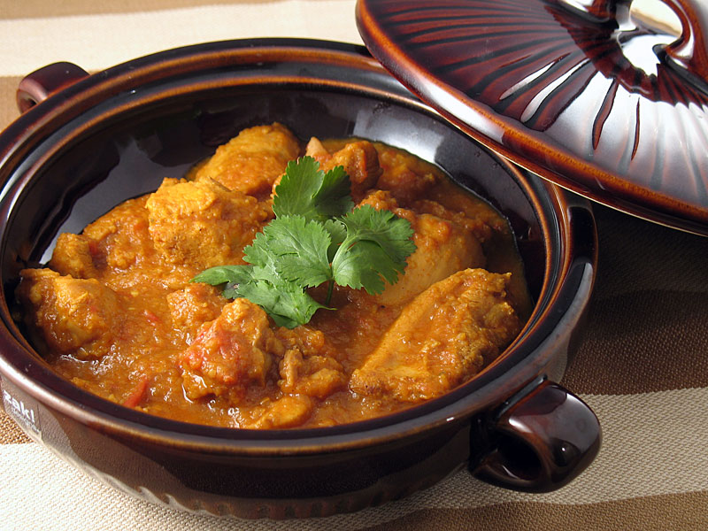

Burmese Chicken Curry (Gaeng Gai Bama)

Description
This is actually a northern Thai dish with a definite Burmese influence. I first ate it in a Burmese restaurant in Melbourne, Australia. I asked for the recipe and of course I didn't get it. I later experimented with some Thai recipes and came up with this final result. We really love this with steamed jasmine rice. It's quite a hot and spicy dish, so if you want it a bit mild, check the curry paste you use first. You can replace coconut milk with evaporated milk, but traditionally, coconut milk is a must.
Ingredients
- ¼ cup vegetable oil
- 8 shallots,thinly sliced
- 1 pound skinless,boneless chicken meat,cut into pieces
- 2 tablespoons red curry paste
- 1 tablespoon curry powder
- ½ cup coconut milk
- ¼ cup pureed tomato
- 2 tablespoons fish sauce
- 1 tablespoon palm sugar
- 2 medium tomatoes,cut into wedges
- 1 bunch cilantro,chopped
Steps
- Heat the vegetable oil in a medium skillet over low heat, and stir fry the shallots until browned and tender. Drain, reserving the oil, and set aside.
- Place the chicken in the skillet with the reserved oil, and stir in the curry paste and curry powder to evenly coat. Pour in enough water to cover, and bring to a boil. Reduce heat, cover skillet, and simmer until the chicken is no longer pink and juices run clear.
- Stir the coconut milk, tomato puree, fish sauce, palm sugar, and 1/2 the tomato wedges into the skillet. Cook and stir over low heat until the mixture is smooth and creamy. Mix in the remaining tomatoes, and continue cooking until tender. Top with cilantro and the fried shallots to serve.